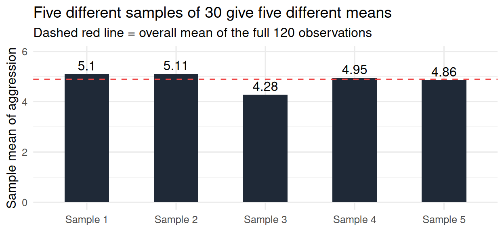
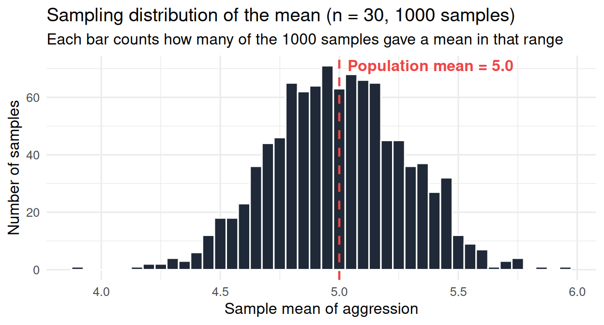
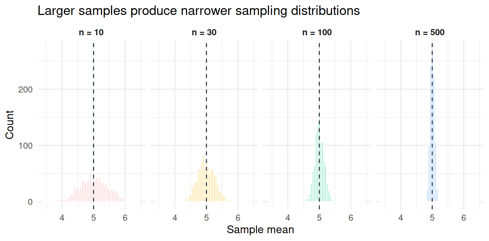
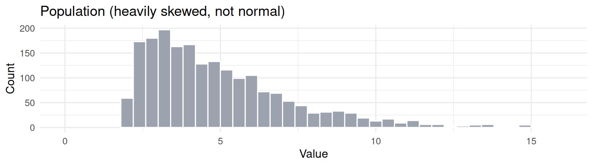
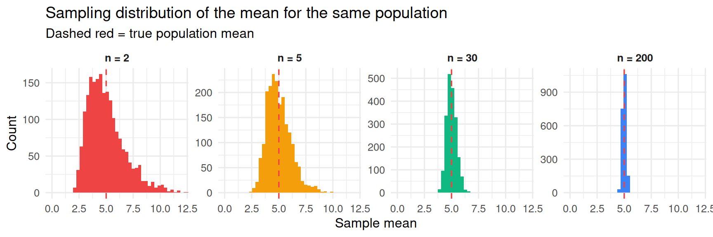

mean(data$aggression)[1] 4.888333Section 1 taught you how R works as a tool. Section 2 taught you how to clean, summarize, and visualize a dataset. Section 3 taught you how to fit and interpret linear models, from the simplest one-number model (the mean) all the way to multiple regression with interactions and assumption diagnostics.
Throughout Section 3 we said the same thing many times, in slightly different words:
Everything in this section is description. We are describing the dataset we have. We are not (yet) making any claim about whether the effects we see hold in the wider world, in people we did not sample, in studies we have not run.
That gap is what Section 4 is about. It is the gap between what we observe in our data and what we want to say about a broader population that our data was drawn from. Closing that gap, or at least quantifying it honestly, is what statistical inference does. The four chapters that follow build up the machinery, the logic, the philosophy, and the practical disciplines that make inference possible.
This chapter is the first step. Before any p-values, any tests, any “is this effect real?” decisions, there is a more basic question: why is generalizing from one sample to a population such a hard problem in the first place, and what new ideas do we need to handle it? By the end of the chapter you will have:
lm() output in Chapter 16 and pointedly ignored at the time.The chapter is conceptual and visual. There is some R code, but it is used to simulate sampling distributions so you can see them with your own eyes. The math is light.
Every study you read or run is a sample. A sample of 120 university students in Innsbruck. A sample of 200 children in a school in Pisa. A sample of 47 patients in a clinic in Berlin. A sample of one researcher’s data. None of these samples is the thing that science actually cares about.
What science cares about is something larger and harder to define. It cares about all young adults (not just our 120), about all children of school age in Western Europe (not just our 200), about all patients with this disorder (not just our 47). The set of all the units about which we want to make a claim is called the population. The bit of the population we actually measured is called the sample.
This vocabulary is more than a label. It carries a conceptual point worth restating in different ways, because students consistently underestimate how strange the situation is.
hours_weekly on aggression for all gamers, not just our 120. Population parameters exist (in principle) but we cannot observe them directly.lm(aggression ~ hours_weekly, data = data) fitted to our 120. Sample statistics are observable; we computed them throughout Section 3.The sample statistic is our estimate of the population parameter. It is not, in any normal sense, the population parameter itself. It is the closest we can get to the population parameter given the data we collected.
Take a concrete case. In our running example, the mean aggression of the 120 participants in vgames_study.csv is:
mean(data$aggression)[1] 4.888333So 4.89 (rounded). What does this number actually tell us?
It is the mean aggression of the 120 participants in our sample. It is not the mean aggression of “all young adults,” “all gamers,” “all participants in similar studies,” or any other population we might care about. The number 4.89 is what we measured in our sample. The number we want, the population mean, is something we have never seen and almost certainly differs from 4.89 to some unknown extent.
The same applies to every other statistic in Section 3. The slope of 0.08 for hours_weekly predicting aggression. The R-squared of 0.072 for that simple regression. The interaction slope of 0.60 in Chapter 18 between condition and trait hostility. Every one of those numbers was a sample statistic. None of them was the population parameter. They were our estimates of population parameters we cannot see.
An analogy. Imagine you want to know the average height of all adults in your country. You cannot line up everyone and measure them. So you pick 100 people, measure them, average their heights, and get 172 cm. The 172 is the sample mean. The thing you actually want to know, the average height of every adult in your country, is the population mean. You will never know that number exactly. Your 100-person sample average is your estimate of it.
This sounds obvious when you put it this way. But the consequence is not obvious. If you cannot directly observe the population parameter, how can you ever say anything useful about it? Why is statistics not just throwing up its hands and saying “we cannot know”?
The answer to that question is the entire content of this chapter, and indeed of inferential statistics as a whole. The answer is that even though we cannot see the population, we can reason carefully about how much our sample estimate would have varied if we had drawn a different sample. That reasoning is what gives us tools to make principled statements about the population, despite never observing it directly.
Here is the question that opens the door.
Suppose you ran your video-game study and computed the sample mean aggression: 4.89. Now imagine you went out and ran the study again, recruiting a completely different set of 120 participants from the same population, running the same protocol, computing the same statistic. What number would you get?
The answer that beginners often expect is: “Well, 4.89, or near it.” This is wrong. The right answer is: “Some other number, almost certainly. Maybe 4.81. Maybe 5.02. Maybe 4.71. The new sample is made of different people, and different people have different aggression scores, so the new mean will be different.”
This difference is not a flaw in your measurement, not a mistake by the experimenter, not a sign that your study was poorly designed. It is an unavoidable consequence of working with samples. Every sample contains different individuals, and the statistic you compute on those individuals depends on who happened to be in the sample. We call this phenomenon sampling variability.
It is essential to understand that sampling variability is structural, not error in the everyday sense. The 4.89 you got was a real, correct answer for the 120 people you happened to measure. So is the 4.81 you might have gotten from a different 120. There is no “correct” sample mean; each sample has its own mean. The variability between them is something we have to think about and live with, not something we should try to make go away.
An analogy. Imagine a giant bowl filled with millions of balls. Some are heavy, some are light, but the average weight (across all the balls in the bowl) is some fixed number, say 100 grams. Now you reach in, blindfolded, and scoop out a handful of, say, 30 balls. The average weight of those 30 balls will be some number, close to 100 but probably not exactly 100. If you put them back and scoop a different 30, the new average will be some other number, also close to 100 but probably not exactly 100, and probably not exactly the same as the first scoop. You scoop a third time: a third average, slightly different from the first two. This is sampling variability. The bowl never changed. Your scoops did.
A short illustration in R will make this concrete. To do it without needing a real bowl of balls, we will pretend that the 120 participants in our vgames_study data are the entire population (in real life they are not, but the simulation will illustrate the idea). Then we will repeatedly draw smaller samples from this “population” and look at how the sample mean varies.
# Pretend the 120 observations in `data` are our population.
# Repeatedly draw a sample of 30, compute its mean, look at how the means vary.
set.seed(2025)
sample1 <- sample(data$aggression, size = 30)
sample2 <- sample(data$aggression, size = 30)
sample3 <- sample(data$aggression, size = 30)
mean(sample1)[1] 5.1mean(sample2)[1] 5.11mean(sample3)[1] 4.28Each line draws a fresh sample of 30 from the same 120 observations, and computes the mean. The three means are not the same. They are close to each other and close to the overall mean of the data, but each one is its own number. That difference between the three numbers is sampling variability, made visible in a single line of R.

The five sample means in the plot above are all close to the population mean (the dashed line), but no two are identical. None of them equals the population mean exactly. Each sample sits in its own slightly different place. The dance around the truth, sample by sample, is the central object of inferential statistics.
The next step is conceptually the most important in this chapter. The previous section showed that a sample mean is one number among many possible numbers, because different samples produce different means. The natural next question is: what does the collection of all those possible numbers look like? If we could somehow take every possible sample of 120 people from the population, compute the mean of each, and stack them all up, what would the result look like?
The collection of all the values a statistic could take, across all the possible samples one could draw from the population, is called the sampling distribution of that statistic.
This is a slippery concept on first encounter, because the sampling distribution is something we are imagining. We do not actually draw all those samples; we draw one sample, in practice. But the idea of the sampling distribution is the bridge between our single sample and the population we care about. It tells us how much our particular sample mean could have varied from other possible means we did not happen to draw.
Three properties of the sampling distribution matter most:
It is helpful to compare the sampling distribution to two other distributions that are easy to confuse with it.
The three are easy to mix up because they all involve histograms and they all involve the same population. But they are distinct objects.
| Distribution | Each point is | Where we see it |
|---|---|---|
| Population distribution | One unit (e.g., one person) | Almost never observed |
| Sample distribution | One unit in our sample | Directly: hist(data$aggression) |
| Sampling distribution | One summary statistic (e.g., the mean) from one hypothetical sample | Imagined; can be simulated |
The sampling distribution is the new object in this section, and the rest of the chapter builds up tools to think about it. The next step is to actually look at one, by simulating it.
We cannot in practice run a real study a thousand times. But we can do something almost as good in R: we can build a fake population on the computer, draw a thousand samples from it, compute the mean of each, and plot the resulting collection of means. That collection is the sampling distribution. By looking at it directly, we can see all three properties listed above with our own eyes.
The R function for generating random numbers from a normal distribution is rnorm(). If we wanted to pretend that aggression in some population was normally distributed with a mean of 5.0 and a standard deviation of 1.5, we could generate one sample of 30 like this:
set.seed(2025)
one_sample <- rnorm(30, mean = 5.0, sd = 1.5)
mean(one_sample)[1] 5.310186So one sample of 30 from the population gave us a sample mean of about 5.06. As we already know, a different sample would give us a different mean. The function replicate() lets us repeat that operation many times automatically. The following line draws 1000 different samples of size 30 from the same population, computing the mean of each:
set.seed(2025)
sample_means <- replicate(1000, mean(rnorm(30, mean = 5.0, sd = 1.5)))
length(sample_means)[1] 1000head(sample_means)[1] 5.310186 5.094302 4.763600 4.664535 4.495557 5.259209We now have a vector of 1000 sample means. Each one is the mean of a different sample of 30 people from the same population. The first six values are shown.
What does the distribution of these 1000 means look like? Two things, mainly: where is its center, and how spread out is it?
mean(sample_means)[1] 4.995496sd(sample_means)[1] 0.2841269The mean of our 1000 sample means is very close to 5.0, the value we set when we generated the population. The standard deviation of those 1000 sample means is around 0.27. These are the central tendency and the spread of the sampling distribution. Let us visualize it:

Look closely at this plot. Every bar represents how many of our 1000 simulated samples produced a mean in that small bin. The dashed red line is the true population mean. Notice:
A single sample is one draw from this distribution. The mean of our actual study is one of the dots that would fall somewhere on this histogram. The 1000 dots in our simulation are alternative versions of that one dot, each from a different hypothetical replication.
The width of the sampling distribution has a special name: the standard error (SE) of the statistic. It is just the standard deviation of the sampling distribution. Its meaning is the meaning of that width.
The standard error is not a property of the data we collected. It is a property of the procedure (the statistic + the sample size + the population variability). The same data could yield estimates with different standard errors depending on which statistic you compute (the mean has one SE, the median has another, a slope has another). And the same statistic on the same kind of data could yield different SEs depending on the sample size.
For the sample mean specifically, there is a tidy formula:
\[ SE_{\bar{x}} = \frac{\sigma}{\sqrt{n}}. \]
In words: the standard error of the sample mean equals the population standard deviation divided by the square root of the sample size. The formula captures two intuitions cleanly:
Our simulation matches the formula. The population SD was 1.5, the sample size was 30, so we expected the SE to be:
1.5 / sqrt(30)[1] 0.2738613And the standard deviation of our 1000 simulated means was about 0.27. The two values agree to within simulation noise. The formula is not magic; it is the analytic shortcut for the same quantity our simulation produced by brute force.
We can visualize the “n shrinks the SE” point directly by running the simulation at several sample sizes and overlaying the resulting sampling distributions.
set.seed(2025)
means_n10 <- replicate(1000, mean(rnorm(10, mean = 5.0, sd = 1.5)))
means_n30 <- replicate(1000, mean(rnorm(30, mean = 5.0, sd = 1.5)))
means_n100 <- replicate(1000, mean(rnorm(100, mean = 5.0, sd = 1.5)))
means_n500 <- replicate(1000, mean(rnorm(500, mean = 5.0, sd = 1.5)))
# Empirical SE (standard deviation of the sample means)
c(n10 = sd(means_n10), n30 = sd(means_n30),
n100 = sd(means_n100), n500 = sd(means_n500)) n10 n30 n100 n500
0.47221669 0.28212384 0.14866981 0.06651027 # Theoretical SE from the formula
c(n10 = 1.5 / sqrt(10), n30 = 1.5 / sqrt(30),
n100 = 1.5 / sqrt(100), n500 = 1.5 / sqrt(500)) n10 n30 n100 n500
0.47434165 0.27386128 0.15000000 0.06708204 The simulated and theoretical SEs agree, and you can see the SE shrinking from about 0.47 (n = 10) down to about 0.067 (n = 500). The same comparison as a single picture:

All four sampling distributions are centered on 5.0 (the population mean, marked with a dashed line). But they get progressively narrower as the sample size increases. With n = 10, the sample means range from about 3.5 to 6.5; with n = 500, they range from roughly 4.85 to 5.15. The center is the same; the precision (the SE) is what changes.
lm() outputRecall the summary(lm(...)) output from Chapter 16. The Coefficients block had four columns: Estimate, Std. Error, t value, and Pr(>|t|). We told you, every time, to focus on the Estimate column and to ignore the rest until Section 4.
You can now read the second column. The Std. Error of a coefficient is the standard deviation of the sampling distribution of that coefficient. It tells you how much the slope (or intercept) would wobble if you re-ran the study with a fresh sample of the same size from the same population. A small Std. Error means the slope is a precise estimate; a large Std. Error means it is imprecise. The remaining two columns (the t-value and the p-value) are calculations built on top of this Std. Error; they answer the question “is the slope big enough, relative to its noise, that we should treat it as different from zero?” That is Chapter 22’s topic. The Std. Error, the building block, is what we have just defined.
For example, on our running model:
m1 <- lm(aggression ~ hours_weekly, data = data)
summary(m1)$coefficients Estimate Std. Error t value Pr(>|t|)
(Intercept) 4.19617633 0.2698749 15.54860 2.432180e-30
hours_weekly 0.08164636 0.0270674 3.01641 3.133333e-03The slope of hours_weekly is 0.082, and its Std. Error is 0.027. The interpretation: if we re-ran the same study many times with fresh samples of 120, the slope estimates would cluster around the true population slope, with a typical wobble (standard deviation) of about 0.027. The slope estimate is reasonably precise, in the sense that it would not bounce around all over the place across replications.
We have been quietly using a remarkable fact since the simulation in the previous section: the sampling distribution was always bell-shaped, no matter what we tried. We generated the underlying data from a normal distribution in those examples, which makes the bell shape unsurprising. But the result is much stronger than that.
The Central Limit Theorem says: when you compute the mean of a sample, the sampling distribution of that mean is approximately normal, regardless of the shape of the original data, as long as the sample is large enough.
This is a theorem, in the strong mathematical sense. It has a proof. It is not an approximation or a rule of thumb. It says that even if the underlying data is wildly skewed, bimodal, or strangely shaped, the means of large enough samples behave as if they were drawn from a normal distribution. Means smooth out the strangeness of the original data.
The phrase “large enough” is the only fuzzy part. How large is enough depends on how non-normal the original data is. A common practical rule of thumb is n ≥ 30, but this is just a rule, not a law. With mildly non-normal data, samples of 20 or 25 give close-to-normal sampling distributions. With severely skewed or weird data, you may need 50 or more before the sampling distribution is convincingly normal.
A demonstration helps. Suppose the underlying data were not normal at all, but were drawn from a heavily skewed distribution (a chi-squared distribution, say, which has a long tail to the right). What does the sampling distribution of the mean look like as we increase n?


The first picture above shows the population, which is heavily skewed to the right. Most values are low, but a long tail extends to the right. The second picture shows what the sampling distribution of the mean looks like for that population at four sample sizes.
This is the CLT at work. The shape of the data (top panel) and the shape of the sampling distribution of the mean (bottom panel) are very different things. As n grows, the sampling distribution becomes more and more normal, regardless of how non-normal the data themselves are.
Why does this matter? Because the normal distribution has known mathematical properties that we can use to compute probabilities (and therefore p-values, in the next chapter). If sampling distributions were arbitrarily shaped, we could not compute anything; every problem would need bespoke math. The CLT guarantees that as long as our samples are reasonably large, we can use the normal distribution as the reference shape for our statistic. This is the single largest reason the normal distribution shows up everywhere in statistics.
We have been computing the sampling distribution of the sample mean because the mean is the simplest statistic and the easiest to visualize. But the concept of a sampling distribution is not specific to means. It applies to every statistic you can compute from a sample.
The standard error is, for every one of these, the standard deviation of the corresponding sampling distribution. The Std. Error column of summary(lm(...)) contains the standard errors of the coefficients. When R prints the standard error of a correlation, or of a chi-squared statistic, or of a regression slope, the meaning is the same: the standard deviation of the sampling distribution of that statistic.
You will eventually meet two refinements of this idea.
We started the chapter with a complaint: we care about the population, but we have only a sample. The number we computed from our sample (the mean, the slope, the R-squared) is not the population parameter; it is one observation in a large space of possible numbers we could have computed if we had drawn a different sample.
The sampling distribution is the entire object that describes that space. The standard error is the single number that summarizes how wide the space is. Together, they let us say things like:
These statements are inferences. They are the kind of claim that statistical inference is in the business of producing. To make them, you need the sampling distribution as a conceptual object, and you need the standard error as a quantitative summary. The rest of Section 4 will take this foundation and build on it: how do we decide whether a result is too far from zero to be plausibly chance? What does “too far” mean precisely? What are the rules of the game, and how were they invented? Those are the topics of Chapters 22 onwards.
For Lakens’ formulation of this same idea, see Chapter 1 of Improving Your Statistical Inferences (Lakens, 2022). Navarro (2018), Chapter 9 (Introduction to probability) and Chapter 10 (Estimating unknown quantities from a sample), covers the same material from a slightly different angle and is a useful companion read.
Chapter 22 picks up where this one leaves off. We have a sample statistic, and we know its sampling distribution. The natural next question is: how should we use this to make a decision about whether an effect in our data is “real” in the population? That question has a long, contested history. Two giants of twentieth-century statistics, Ronald Fisher and Jerzy Neyman (with Egon Pearson), proposed two different answers, and psychology has been using a strange mixture of both ever since. Chapter 22 walks through that history, names the two frameworks, and tells you precisely what a p-value is (and, more importantly, what it is not). It is the chapter that connects the standard error you now understand to the p-values you will read in every research paper for the rest of your career.
1. What is the difference between a population and a sample, and between a population parameter and a sample statistic?
2. What is “sampling variability”?
3. What is the sampling distribution of a statistic?
4. Where is the sampling distribution of the sample mean centered?
5. What is the standard error (SE) of a statistic?
6. How does sample size affect the standard error?
7. What does the Central Limit Theorem say?
8. Does the concept of a sampling distribution apply only to means?
9. What does the “Std. Error” column of an lm() model’s coefficients table represent?
10. Why does the sampling distribution matter for statistical inference?
Lakens, D. (2022). Improving your statistical inferences. Chapter 1, “Using p-values to test a hypothesis.” https://lakens.github.io/statistical_inferences/01-pvalue.html
Navarro, D. J. (2018). Learning statistics with R: A tutorial for psychology students and other beginners (Version 0.6), Chapters 9 (“Introduction to probability”) and 10 (“Estimating unknown quantities from a sample”). https://learningstatisticswithr.com